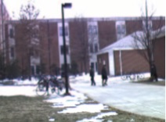
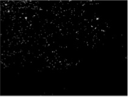
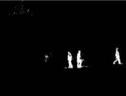
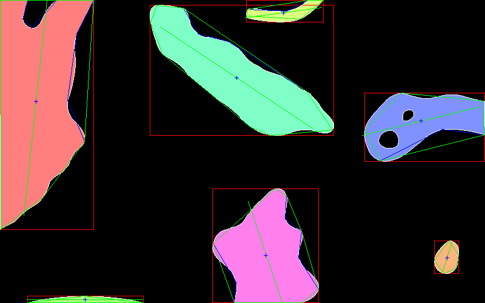
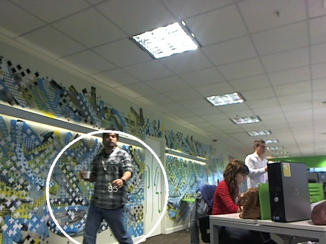

Descripcion
El seguimiento de objetos u object tracking es el metodo para estimar el tiempo, la ubicacion de uno o mas objetos moviles mediante el uso de una camara.
La tecnica utilizada es la de substraccion de fondo, esta tecnica no esta relacionada con la tecnica de substraccion de fondo mediante color, tambien conocida como pantalla verde, muy utilizada en el mundo del entretenimiento.
La manera que se identifican los objetos es mediante un fondo conformado por varios cuadros que representan el patron con el cual cada cuadro se comparara para identificar y seguir el objeto que aparece en la pantalla.
Una de las limitaciones que tiene esta tecnica es que es muy sensible a los cambios de luz en el ambiente. Si se usa en espacios abiertos o con luz variable, se debera readaptar el patron del fondo para volver a identificar los objetos.
Componentes
La libreria es una combinacion de varias librerias y desarrollo interno, todas desarrolladas bajo la libreria OpenCv.
Extraccion de fondo:
Para la identificacion del fondo se utilizo el algoritmo CodeBlock, que es parte de la libreria base OpenCv. Para esto realiza la acumulacion de los primeros cuadros para conformar el fondo. El resultado de la misma es una imagen en blanco y negro, donde se puede distinguir el objeto en la imagen.
  Reconocimiento de color:
Para identificar objetos diferenciandolos por color se utilizo la libreria cvblob. Con el uso de esta libreria y mediante esta tecnica denominada labeling se identifican los objetos color blanco dentro de la imagen generada por la libreria codeblock.
Seguimiento de objetos:
Una vez realizado el reconocimiento de objetos, se realiza la identificacion de cada uno. Para esto se utilizo algoritmos para determinar que el objeto sea el mismo de un cuadro al otro mediante el calculo de la diferencia del radio con respecto a la posicion y la variacion de tamaño del objeto. Todo esto se parametriza mediante archivos de configuracion de la libreria. En esta etapa se guardan los datos de estadisticas, la cantidad de objetos que se identifican en un cuadro, la duracion que tuvo en pantalla, la velocidad, etc.
Conteo de objetos:
Finalmente, para determinar los objetos que cruzan frente a la camara se parametriza el trazado de una linea dentro de la pantalla, cada vez que un objeto la cruza en cualquiera de las direcciones se realiza un conteo tomando en cuenta la dirccion del objeto con respcto a la linea.

Configuracion
Toda la parametrizacion de la libreria se realiza mediante archivos XML.